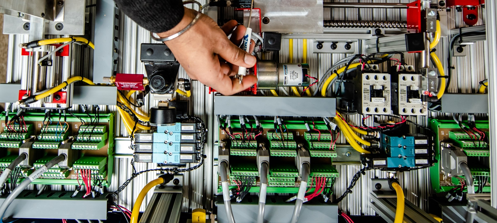

Overview

Elektro merupakan bidang ilmu yang mempelajari
listrik dan aplikasinya dalam kehidupan sehari-hari.
Lulusan Jurusan Teknik Elektro akan dibekali dengan ilmu
dan pengetahuan seputar konsep, perancangan, pengembangan,
serta produksi perangkat listrik dan elektronik. Kamu juga
akan banyak membahas metode pembangkit dengan sumber energi
baru, metode penyimpanan energi, dan metode kontrol penghematan
energi.
Kurikulum
Mata kuliah yang akan dijumpai di bangku perkuliahan antara lain Rangkaian
Listrik, Medan Elektromagnetik, Mikroprosesor, Sistem Kontrol, Sistem Telekomunikasi,
Teknik Digital, Aljabar Linier, Sistem Kendali, Elektronika Digital Elektronika Dasar,
dan masih banyak lagi. Jika ingin melanjutkan studi ke jenjang pascasarjana tentu saja
bidang kajiannya akan semakin spesifik. Kamu tinggal pilih kampus yang sesuai dengan keinginanmu,
bisa di dalam negeri atau di luar negeri.
Propek Pekerjaan

Bidang yang paling populer di Teknik Elektro ialah tenaga listrik (arus kuat).
Tak heran banyak lulusan Teknik Elektro yang membidik industri energi dan tenaga
listrik sebagai tujuan utama. Meski demikian, prospek kerjanya terbilang sangat luas.
Hampir seluruh industri membutuhkan Sarjana Teknik Elektro, mulai dari industri telekomunikasi,
minyak dan gas, semikonduktor, aerospace, manufaktur, otomotif, transportasi, jasa dan pelayanan,
juga bio engineering. Lulusan Teknik Elektro yang bekerja di industri telekomunikasi misalnya,
memegang peran penting dalam melakukan kodefikasi informasi menjadi sinyal listrik. Selain itu,
instansi pemerintah seperti Kementerian ESDM juga membutuhkan lulusan Teknik Elektro, lho
BUMN

Ada banyak perusahaan yang menerima lulusan teknik elektro untuk bekerja di sana antara lain PT. PLN,
PT. Telkom Indonesia, PT. Adhi Karya, PT. Bank Mandiri, dan masih banyak lagi.
BUMS
Ada banyak perusahaan multinasional yang berada di Indonesia antara lain Unilever, Freeport, ASUS,
Chevron Corporation, Dell, dan masih banyak lagi.
Project Engineer
Berkarir di bidang ini akan bertugas dalam mengembangan desain, memberikan tugas kepada pekerja lain,
mematuhi keselamatan dan persyaratan teknis, dan menjalankan proyek tetap sesuai anggaran. Bekerja menjadi
project engineer membutuhkan latar belakang di bidang teknik elektro dan kemampuan dalam manajemen proyek.